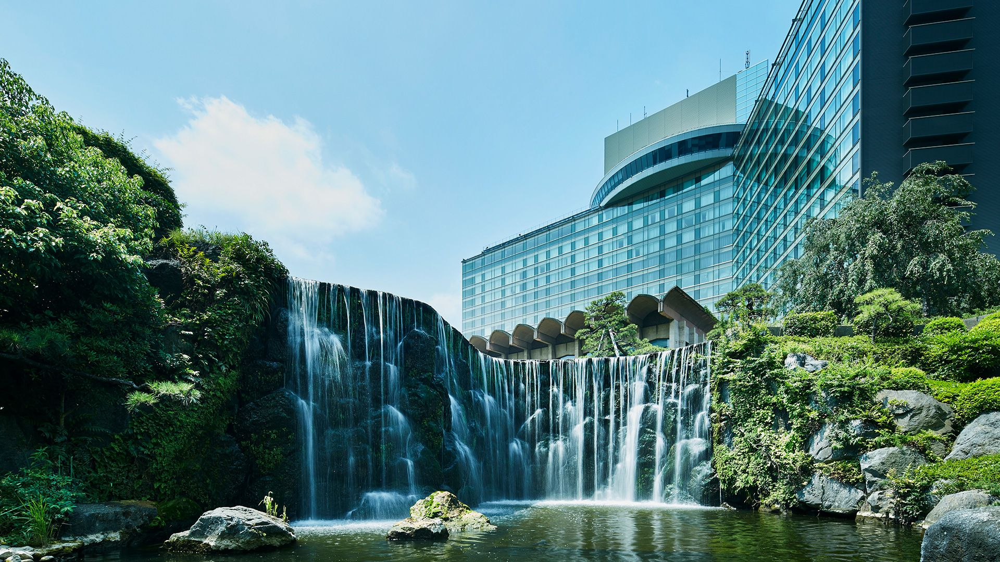

The Hotel New Otani Tokyo's landscape garden is open to non-guests too. The spacious garden, dating back around 400 years, has everything you'd expect from a classic Japanese landscape garden: a vermillion bridge crossing a large pond, a relaxing rock garden with stones from Sado Island, momiji maple leaves that burn bright red in autumn, and even a waterfall. When wandering it’s easy to get lost amid the scenery, but the fine details of the landscape design and nature surrounding you make it well worth the risk. To help you retrace your steps, the garden is illuminated after sunset throughout the year.

